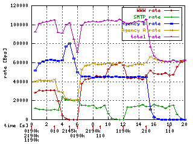

- ceil argümanı bir sınıfın kullanabileceği band genişliğinin azamisini belirtir. Bu, sınıfın yardım alarak ulaşabileceği band genişliğinin sınırıdır. Öntanımlı tavan aynı hız gibidir. Biz şimdi 1:2 sınıfları (A) için ceil 100kbps ve önceki bölümdeki 1:11 sınıfını (A'nın diğer sınıfı; WWW için olan) ceil 60kbps ve diğerini de ceil 20kbps yapalım.

Bu çizge önceki çizgeye göre 3. zaman noktasında farklıdır, çünkü A'nın diğer sınıfının hızı 20kbps ile sınırlanmıştır. Bu nedenle müşteri A toplamda sadece 20kbps almış olur ve kalan miktar B'ye tahsis edilir.İkinci fark 15. zaman noktasında B durduğunda görülür. A için hız tavanı belirtilmemiş olsaydı, B'nin tüm band genişliği A'ya tahsis edilecekti, ama şimdi, A sadece 60kbps kullanabilmekte ve artan 40kbps kullanılmamaktadır.Bu özellik ISS'ler için yararlıdır, çünkü bir müşterinin alabileceği hizmet miktarını diğer müşteriler hizmet almadıkları zaman bile sınırlamak isterler. (Müşterilerinin daha iyi hizmet için daha fazla para ödemelerini istediklerinden olsa gerek.) Kök sınıfların yardımlaşmaya katılmadıklarına, dolayısıyla, onlar için bir tavan belirtilmesinin gerçekte gerekmediğine dikkat ediniz.
Not Bir sınıf için tavan daima mümkün olan en yüksek hız olmalı, ayrıca daima en azından çocuklarının her birininin tavanı kadar yüksek olmalıdır.